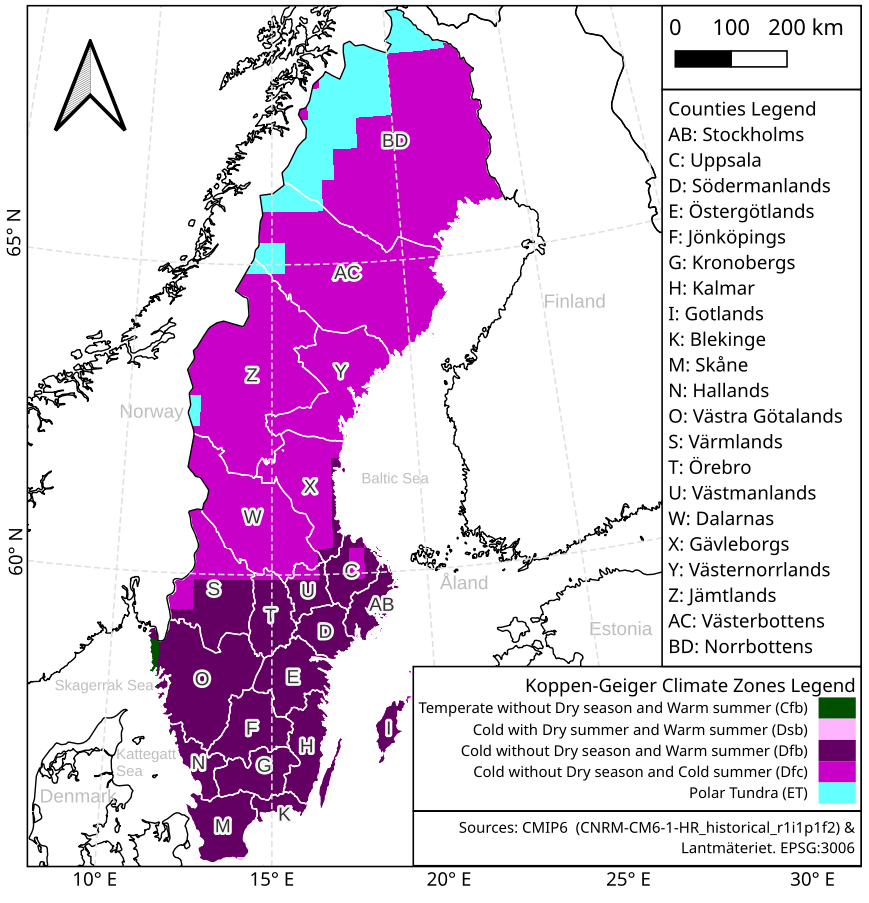
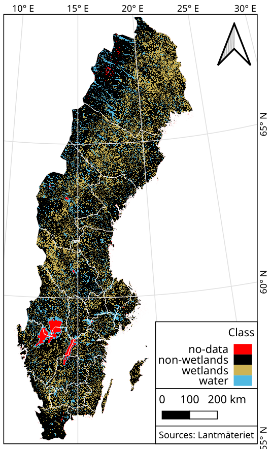
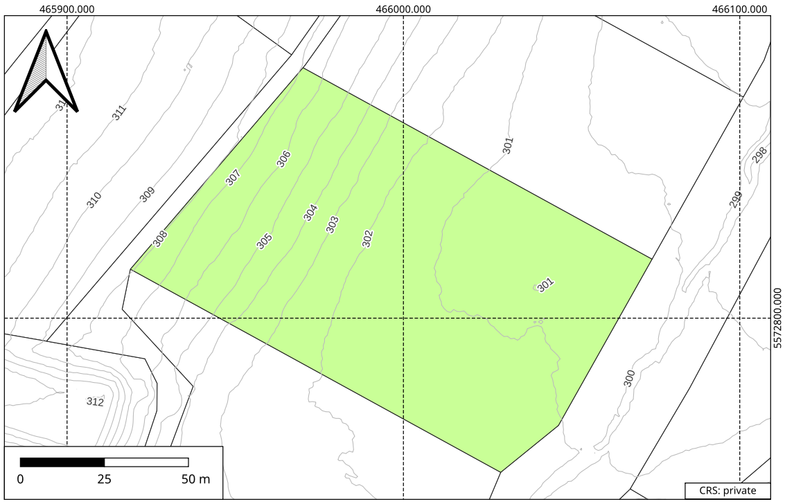
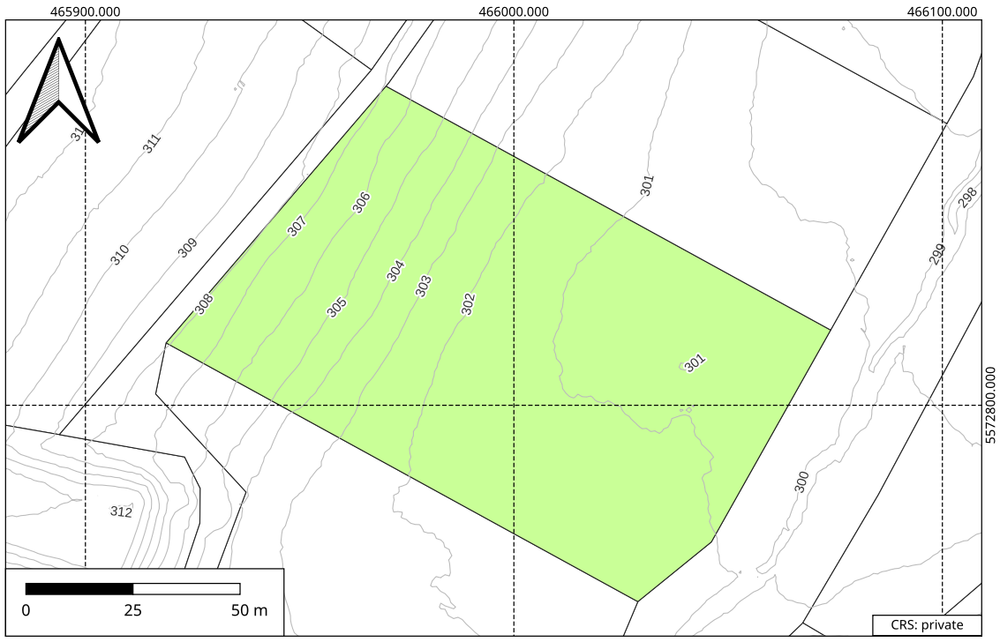

Skilled in software development with Java and Python.

Experience developing responsive applications and serving data in the web domain, preferring Spring Boot + Jakarta (JavaServer) Faces (JSF) + Primefaces for building all-round interactive SPA's, acquainted with FastAPIand Flask for REST services.


Proficient with Git. Very involved in DevOps and CI/CD, learned to leverage Gitlab CI/CD pipelines. Capable deploying in Linux servers using Docker, and developing Selenium integration tests and jUnit for backend units.

Comfortable with vanilla HTML, CSS, and JavaScript. D3 and OpenLayers libraries.


Backend experience developing CRUD applications and fetching paginated data from Postgres (relational), Qdrant (vector), Neo4j (graph), PostGIS (geographical).
Finance tracking tools
Needing to keep track of my finances, and absolutely tired of third-party apps selling my data, I have worked some personal solutions that have made public in different ways.
Developed a web application to parse a csv file into a nice dashboard combining Spring Boot, JSF, Primefaces and D3. Available in finances.salvadorh.com.
Had a previous solution built with Python: tk-inter, pandas, and matplotlib. Where a csv is provided via CLI, but it felt outdated, slow and clunky. Nonetheless the Source Code is freely available.

Housing Project
Developed a web map gui for a project during my Master's Programme, aimed for any of the Housing Agencies in Lund (Sweden), since most lack this kind of feature.
Using OpenLayers, OpenStreet Map (OSM), and WMS requests to a GeoServer. All data is dummy data.

CIAL School's website
In 2014 wrote a school's website from scratch, and maintained it as the webmaster until 2019.


Lean to open-source tools with bash, python, and QGIS, if it can be solved in the console that's my way to go.
Experience with ArcGIS, ArcPro, Terrset, SNAP Toolbox, PostGIS (PostgreSQL), ENVI, and FML.


Employ Python for programmatically solving tedious and repetitive tasks, extracting, transform and loading (ETL) data, object-oriented programming, and data visualization.
Acquainted with the following libraries: Numpy, Pandas, Geopandas, Scipy, Sklearn, GDAL, OSR, JSON, ArcPy, geopandas, and shapely. And Keras, Tensorflow, and Pytorch to a lesser extent, among others. I also get my way around spreadsheets.
Master's Thesis: “Monitoring wetlands in Sweden using multi-source satellite data and machine learning algorithms”
Developed a pipeline workflow for classifying wetlands all over Sweden, using Google Earth Engine (GEE), in Javascript.
Gathering multi-source multi-temporal imagery, from Sentinel-1 and Sentinel-2 satellites, and combining it with topographical data.
Applying a Machine Learning Random Forests classifier. Available at Github.


Project: The prospects of coffee cultivation in South America in a future climate
Developed a group of Python scripts for classifying The Earth's climate zones based on Köppen-Gauger method, averaging climate normals, for global NC files with temperature and precipitation data from two CMIP6 experiments: Historical (1850-2015) and Representative Concentration Pathway (RCP) 8.5 (2015-2100) models. Available at Github.

Project: Horizon Angles (ArcGIS Toolbox)
Developed a script that calculates the maximum angular obstruction for each cell on a raster, particularly from a digital elevation model (DEM), recreating functions from GRASS GIS and GDAL, it combines ArcPy. The project required the design of a graphic user interface (GUI) allowing to easily parse parameters between ArcGIS and Python. Available at Github.


My skills in GIS include:
Data Management & Harmonization
Digitization & georeferencing
Remote Sensing & Satellite Imagery
Spatial Databases (SQL & PostGIS)
Cartography
Geostatistics


 

(click images above to increase size)


Seismic processing and interpretation, Petrophysics & well logs.
Fuzzy Logic, Neural Networks & Deep learning algorithms for regression.
Bachelor's Thesis: “Vp logs prediction from well logs and seismic using ANFIS”
The goal was to infer sonic logs for 27 wells located in a productive basin in Venezuela, using fuzzy logic and neural networks combining radioactive and resistive logs, with different seismic attributes resampled and extracted from a seismic cube, as input for the neuro-fuzzy (machine learning) regressor. The generated maps showed the expected low p-wave velocity behavior for most of the geologic horizons around each currently active well. And the accuracies
For the project we employed OpendTect Neural Networks module, MATLAB ANFIS (Adaptative Neuro-Fuzzy Inference System) for training the fuzzy sets, SegyMat library for reading traces and Oasis Montaj for data management.


Arch User Repository (AUR) Maintainer
Currently maintaining a couple of packages for the Arch Linux community: pktools & Windscribe-cli
For this purpose web-scrapping was the way to go, employing BeautifulSoup library to automatically check with a python script for new updates every time my laptop boots.
Woman in Data Science (WiDS) Datathon 2022
Team'ed-up with three friends to participate in a Kaggle competition. And even though we were not close to win, it resulted a very enriching experience. Github Gist.
Google Keep Takeout
A simple script for simplifying Google keep notes takeout from JSON to TXT